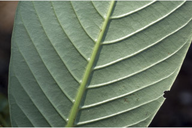
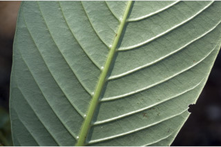
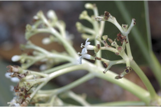
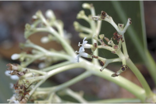

| Leaves : | Leaves simple , opposite , decussate ; stipules intrapetiolar , ovate -lanceolate, sheathing ; petiole 0.8-3 cm, planoconvex in cross section, glabrous ; lamina 10-25 x 4.5-10 cm, obovate to wide obovate , sometimes elliptic , apex abruptly and shortly acuminate , base cuneate - decurrent , margin revolute , chartaceous or thinly coriaceous , glabrous beneath; midrib and secondary_nerves raised above; secondary_nerves 13-18 pairs, parallel , gradually curved, domatia present at the axils; tertiary_nerves closely and obliquely percurrent . |


 



 
